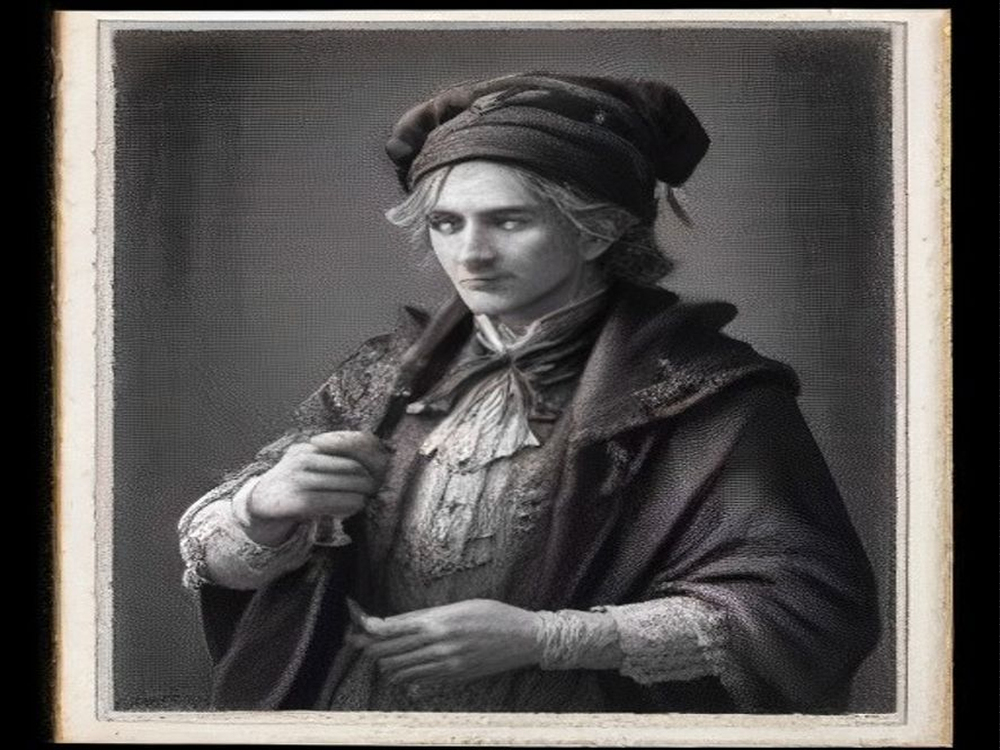

Книга «Путь Дурака»
Глава 6. О дураке

последняя, потому что дальше уже некуда
Дурак — это не диагноз.
Это должность.
Единственная, на которой можно быть честным.
Умные всё время притворяются.
Играют роли.
Носят маски.
Соответствуют.
А дураку уже не стыдно.
Он уже всё про себя знает.
Или не знает, но хотя бы не делает вид, что знает.
Часть первая. Кто такой дурак на самом деле
Дурак — это не тот, кто глуп.
Глупый — это тот, у кого мозгов не хватает. А дурак — это тот, у кого мозги есть, но он ими не пользуется. Или пользуется не по назначению.
Дурак — это человек, который:
• Наступает на одни и те же грабли, но каждый раз удивляется.
• Верит в чудеса, хотя сто раз уже обжёгся.
• Лечит душу водкой, а тело — работой.
• Ищет любовь там, где её нет, и не замечает там, где она есть.
• Думает, что завтра начнёт новую жизнь, а сегодня ещё можно расслабиться.
Дурак — это каждый из нас. Просто в разное время суток.
Часть вторая. Великие дураки
История помнит умных. Но любит — дураков.
Самые великие люди на свете были дураками. Потому что только дурак мог:
• Поверить, что земля круглая, когда все знали, что плоская.
• Сказать, что солнце — в центре, когда все видели, что оно ходит по небу.
• Рисовать странные картины, когда все рисовали красивые.
• Писать стихи, когда надо было пахать.
• Любить, когда не любили.
• Ждать, когда уже нечего было ждать.
Дурак — это тот, кто не вписывается. Кто идёт поперёк. Кто слышит другое.
И благодаря им — мы вообще что-то имеем. Культуру, науку, искусство, смыслы.
Умные сохраняют мир таким, какой он есть.
Дураки — меняют его.
Часть третья. Дурак и возраст
В молодости быть дураком — нормально. Даже почётно. «Молодой, горячий, глупый» — это простительно.
В середине — уже стыдно. Вроде пора поумнеть, а ты всё ещё наступаешь на грабли. С работы выгоняют, женщины уходят, друзья крутят пальцем у виска.
В старости — почётно снова.
Потому что старый дурак — это мудрец, которому надоело притворяться умным.
Он уже всё понял. Про деньги, про любовь, про смерть. И теперь может себе позволить просто быть. Смешным. Странным. Неудобным. Настоящим.
Старый дурак — это вершина эволюции.
Часть четвёртая. Дурак и деньги
Дураку деньги нужны, как рыбе зонтик.
Он их то теряет, то находит, то раздаёт, то пропивает, то вкладывает в сомнительные проекты, которые почему-то иногда выстреливают.
Умный копит. Дурак — тратит.
Умный планирует. Дурак — живёт.
Умный боится потерять. Дурак — теряет и не замечает.
И вот парадокс: к старости умные часто оказываются при деньгах, но при пустой душе.
А дураки — при пустых карманах, но при полной жизни.
Кто из них выиграл — вопрос вкуса.
Часть пятая. Дурак и любовь
Дурак любит не так, как все.
Он не выбирает. Не прикидывает. Не взвешивает. Он просто ныряет. С головой. В омут. В первую встречную юбку. В последнюю улыбку.
И обжигается. Конечно, обжигается. Сто раз.
Но в сто первый — снова ныряет.
Потому что для дурака не любить — хуже, чем обжечься. Не любить — значит не жить.
Умные строят отношения. Дураки — любят.
И, как ни странно, именно дураки иногда доживают до старости с тем самым человеком.
Потому что умные разбегаются, посчитав выгоду.
А дураки остаются — просто потому что не умеют уходить.
Часть шестая. Дурак и смерть
Дурак смерти не боится.
Не потому что он смелый. А потому что не верит.
Он всю жизнь не верил, что с ним случится что-то плохое. И в смерть тоже не верит. До самого конца.
А когда приходит — удивляется: «О, и ты здесь? А я думал, ты только для других».
И уходит с той же дурацкой улыбкой, с которой жил.
Это не глупость.
Это — дар.
Дар не принимать всерьёз то, что всё равно не изменить.
Часть седьмая. Главный секрет дурака
Главный секрет дурака простой и обидный для умных.
Дурак счастливее.
Потому что он не ждёт.
Не планирует.
Не копит.
Не боится.
Не оглядывается на чужое мнение.
Не сверяется с инструкцией.
Он просто живёт.
Как получается.
Как дышится.
Как Бог на душу положит.
И в этом — вся соль.
Умные ищут смысл жизни.
А дураки — просто живут.
И в этом смысле — они уже нашли.
Вместо финала
Когда ты молодой дурак — это смешно.
Когда ты взрослый дурак — это стыдно.
Когда ты старый дурак — это мудро.
Всю жизнь можно притворяться умным.
А можно один раз — признаться: «Я дурак».
И выдохнуть.
Потому что дуракам прощается всё.
Даже правда.
Самое последнее
Написано семь глав.
Про деньги, возраст, любовь, самообман, зависимость, детей и дурака.
Можно было бы написать ещё сто.
Про счастье, про одиночество, про веру, про смерть, про надежду, про утро, про ночь, про тишину, про музыку, про хлеб, про вино, про дождь, про солнце, про всё.
Но книга — это не про то, чтобы сказать всё.
Книга — это про то, чтобы сказать достаточно.
А дальше — пусть читатель сам додумывает.
Сам доживает.
Сам доумирает.
И если в какой-то момент, сидя на кухне, глядя в окно, он вдруг вспомнит какую-то строчку из этого разговора — значит, написано не зря.
А если не вспомнит — тоже ничего.
Главное, это сделано.
До конца.
________________________________________
Конец.
Спасибо, что были читателем.
И помните: дураком помирать — не стыдно.
Стыдно — умирать так и не пожив.